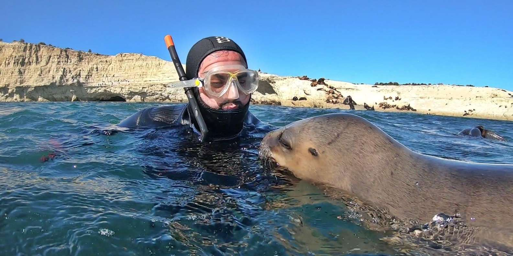
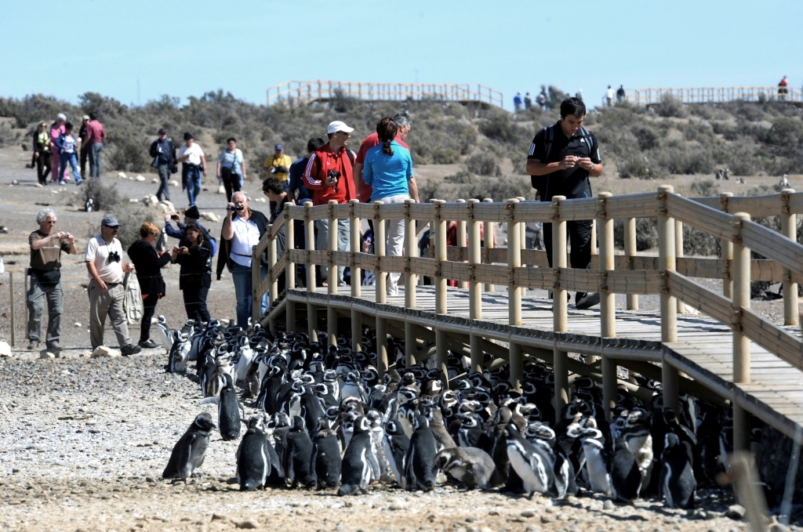
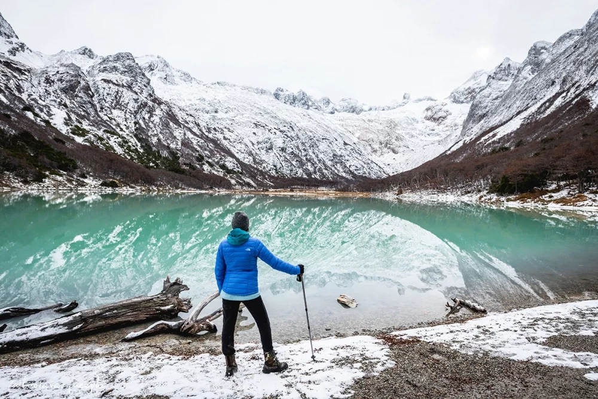

Actividades al aire libre
Rafting en el Rio Manso

La actividad de rafting consisite en una travesia por el Rio Manso de la mano de un profesional que se encargara de mantener la seguridad de los que se encuentran en el bote.
Ademas podra disfrutar de las vistas por la travesia y pequeños juegos con el bote en el rio.
Snorkelin con Leones Marinos
Esta actividad debera tener sumo cuidado ya que estos animales no se encontraran entrenados para ser obedientes, no obstante tienen una personalidad amigable por lo que es poco probable que sufra algun tipo de ataque.
Con todos los materiales necesarios, podra disfrutar de esta experiencia de la mano de profesionales que se encargaran de la seguridad del grupo.
Tour Punta Tombo
Punta Tombo es una reserva natural que les permitira un recorrido guiado agradable, mientras observan la fauna de los alrededores, incluyendo pingüinos, posible avistamiento de ballenas, entre otros animales del territorio.
Cabe resaltar que es una experiencia unica poder ver en completa naturaleza a estas hermosas criaturas.
Trekking por la Laguna Esmeralda
Se realizara un recorrido de 9km por el bosque de la laguna, permitiendonos ver durante el trayecto los glaciares y la fauna de al rededor.
Se recomienda ir preparado fisicamente para aguantar el trayecto de ida y vuelta, de igual forma son vistas dignas de presenciar y recordar.